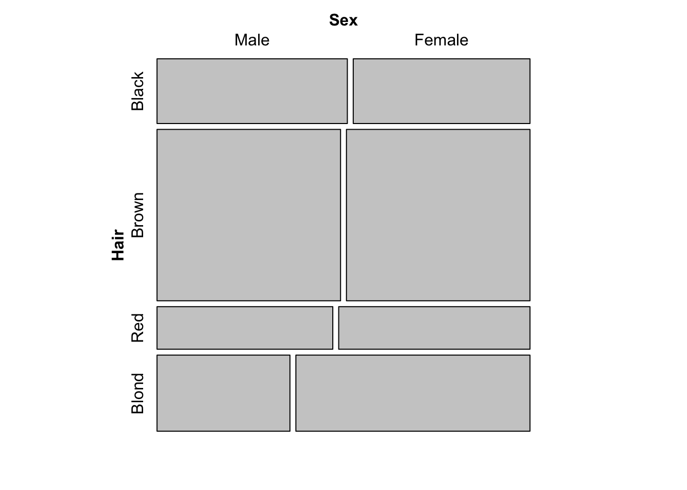

library(tidyverse)vcd
- vcd package from Friendly’s working with categorical data 1.
- The three forms of categorical data are:
- case form (dataframe)
- frequency form (dataframe with count)
- table form (table, matrix)
1 Library
2 Case-Form
- dataframe with factors (categorical) and numerical values.
Code
# Data as data.frame
df <- read.table(header=TRUE, text="
ID Treatment Sex Age Improved
57 placebo male 27 Some
46 treated female 29 None
77 treated female 30 Marked
17 treated female 32 None
36 placebo male 46 Some
23 treated male 38 Marked ")
df$Sex<-as.factor(df$Sex)
df$Treatment<-as.factor(df$Treatment)
df$Improved<-factor(df$Improved, ordered=TRUE, levels=c("None","Some","Marked"))
df ID Treatment Sex Age Improved
1 57 placebo male 27 Some
2 46 treated female 29 None
3 77 treated female 30 Marked
4 17 treated female 32 None
5 36 placebo male 46 Some
6 23 treated male 38 Marked3 Frequency-form
- dataframe that has a count or frequency column
Code
# Agresti table 3.11 p.106
GSS <- data.frame(
expand.grid(sex=c("female","male"),
party=c("dem","indep","rep")),
count = c(279,165,73,47,225,191)
)
GSS sex party count
1 female dem 279
2 male dem 165
3 female indep 73
4 male indep 47
5 female rep 225
6 male rep 191- Cross Tabulation (xtabs)
Code
# usually we would want to have the cross tabulation
# using xtabs
xt <- xtabs(count ~sex+party, data=GSS)
xt party
sex dem indep rep
female 279 73 225
male 165 47 191Code
str(xt) 'xtabs' num [1:2, 1:3] 279 165 73 47 225 191
- attr(*, "dimnames")=List of 2
..$ sex : chr [1:2] "female" "male"
..$ party: chr [1:3] "dem" "indep" "rep"
- attr(*, "call")= language xtabs(formula = count ~ sex + party, data = GSS)- xtab with addmargins
# or we want to have addmargins
addmargins(xt) party
sex dem indep rep Sum
female 279 73 225 577
male 165 47 191 403
Sum 444 120 416 9804 Table Form
Code
# Agresti-Table2.1 2x2 way table
# Gender vs Belief
# use rbind or convert from matrix
tab <- as.table(matrix(c(1230,357,859,413), nrow=2, byrow=TRUE,
dimnames=list(gender=c("F","M"),
belief=c("Yes","No"))))
tab belief
gender Yes No
F 1230 357
M 859 413Code
str(tab) 'table' num [1:2, 1:2] 1230 859 357 413
- attr(*, "dimnames")=List of 2
..$ gender: chr [1:2] "F" "M"
..$ belief: chr [1:2] "Yes" "No"# table has addmargins
addmargins(tab) belief
gender Yes No Sum
F 1230 357 1587
M 859 413 1272
Sum 2089 770 28594.1 Structable table
library(vcd)
# structable representation
# 3-way table
stbl <- structable(HairEyeColor)
str(stbl) num [1:8, 1:4] 32 36 53 66 10 16 3 4 11 9 ...
- attr(*, "dnames")=List of 3
..$ Hair: chr [1:4] "Black" "Brown" "Red" "Blond"
..$ Eye : chr [1:4] "Brown" "Blue" "Hazel" "Green"
..$ Sex : chr [1:2] "Male" "Female"
- attr(*, "split_vertical")= logi [1:3] FALSE TRUE FALSE
- attr(*, "col.vars")=List of 1
..$ Eye: chr [1:4] "Brown" "Blue" "Hazel" "Green"
- attr(*, "row.vars")=List of 2
..$ Hair: chr [1:4] "Black" "Brown" "Red" "Blond"
..$ Sex : chr [1:2] "Male" "Female"stbl Eye Brown Blue Hazel Green
Hair Sex
Black Male 32 11 10 3
Female 36 9 5 2
Brown Male 53 50 25 15
Female 66 34 29 14
Red Male 10 10 7 7
Female 16 7 7 7
Blond Male 3 30 5 8
Female 4 64 5 8HS <- structable(Sex~Hair, HairEyeColor)
HS Sex Male Female
Hair
Black 56 52
Brown 143 143
Red 34 37
Blond 46 81mosaic(HS)
HSE <- structable(Hair+Sex ~ Eye, HairEyeColor)
HSE Hair Black Brown Red Blond
Sex Male Female Male Female Male Female Male Female
Eye
Brown 32 36 53 66 10 16 3 4
Blue 11 9 50 34 10 7 30 64
Hazel 10 5 25 29 7 7 5 5
Green 3 2 15 14 7 7 8 84.2 Matrix table
# Example 2 - JobSat
# 2-way (or 2 factors) table
JobSat <- matrix(c(1,2,1,0, 3,3,6,1, 10,10,14,9, 6,7,12,11), 4, 4)
dimnames(JobSat) = list(income=c("< 15k", "15-25k", "25-40k", "> 40k"),
satisfaction=c("VeryD", "LittleD", "ModerateS", "VeryS"))
JobSat satisfaction
income VeryD LittleD ModerateS VeryS
< 15k 1 3 10 6
15-25k 2 3 10 7
25-40k 1 6 14 12
> 40k 0 1 9 11JobSat <- as.table(JobSat)
str(JobSat) 'table' num [1:4, 1:4] 1 2 1 0 3 3 6 1 10 10 ...
- attr(*, "dimnames")=List of 2
..$ income : chr [1:4] "< 15k" "15-25k" "25-40k" "> 40k"
..$ satisfaction: chr [1:4] "VeryD" "LittleD" "ModerateS" "VeryS"JobSat satisfaction
income VeryD LittleD ModerateS VeryS
< 15k 1 3 10 6
15-25k 2 3 10 7
25-40k 1 6 14 12
> 40k 0 1 9 11Footnotes
Friendly, M. (2013). Working with categorical data with R and the vcd and vcdExtra packages. Toronto: York University.↩︎